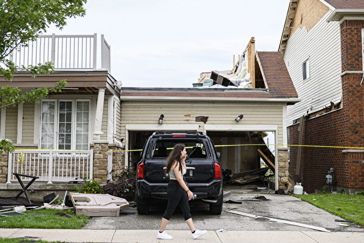

加拿大环境部表示，加拿大的龙卷风发生率在全球排名第二，仅次于美国。（Christopher Katsarov/加通社） 【2024年08月08日讯】（记者季薇多伦多报导）随着官方继续统计损失，安省北部龙卷风项目（Northern Tornadoes Project，简称NTP）的专家确认，周一下午在伊利堡（Fort Erie）至少发生了一场龙卷风。据尼亚加拉地区广播电台Giant FM报导，官员们周二（8月6日）表示，根据目击者提供的视频、照片和报告，昨天（周一）尼亚加拉地区东部可能发生了多场龙卷风。伊利堡地区遭受了大面积的破坏。
周一下午龙卷风过后，尼亚加拉电力公司尽快恢复了所有居民的电力供应。
大型家居建材零售店RONA伊利堡店的经理杰夫·希尔（Jeff Hill）说，他看到木头飞起来，并在可能的情况下赶到店内，他估计商店的损失约为50万元，所幸无人受伤。
住在RONA附近的居民莉兹·雷登（Liz Reddon）表示，她到后院收起露台的遮阳伞时，看到Rona的屋顶飞进她的院子，她与女儿都没有受伤，但RONA屋顶损坏了她后院的游泳池。
NTP是一个于2017年在西安大略大学成立的研究项目，旨在更好地检测加拿大各地的龙卷风发生情况，减轻损失等。
该项目研究员康奈尔·米勒（Connell Miller）对CBC表示，他的团队正在伊利堡评估损失。
米勒说，评估龙卷风的破坏程度，例如该地区的任何碎片和建筑物可能受到的损害，可以帮助研究人员确定龙卷风的强度和规模。
他补充道，研究人员还在调查另外两场疑似龙卷风，其中一场发生在伊利堡Stevensville社区，因为有人报称该地区出现了漏斗云。
米勒表示，虽然安省西南部是龙卷风发生的热点地区，但尼亚加拉地区的龙卷风通常比安省巴里或渥太华等地区少。
加拿大环境部表示，加拿大的龙卷风发生率在全球排名第二，仅次于美国，最常发生在草原地区和安省南部，并在6月底和7月达到高峰。
责任编辑：岳怡